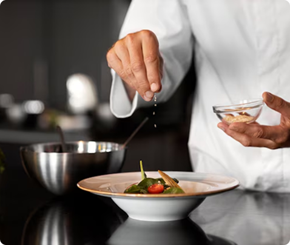
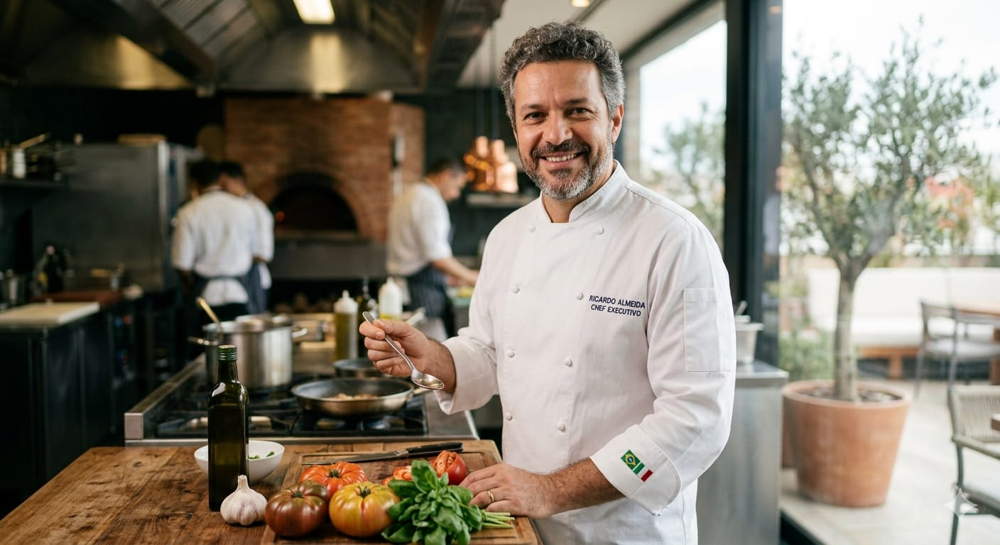
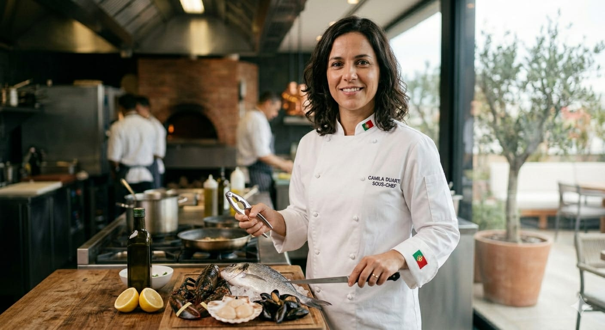
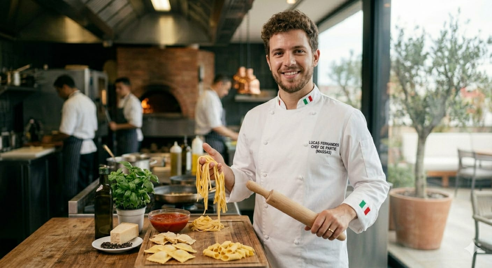
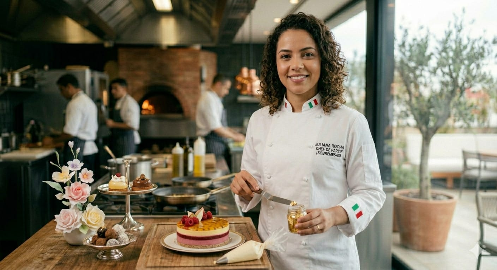
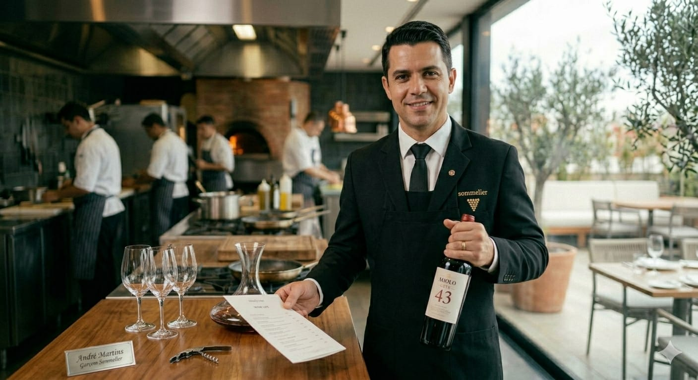
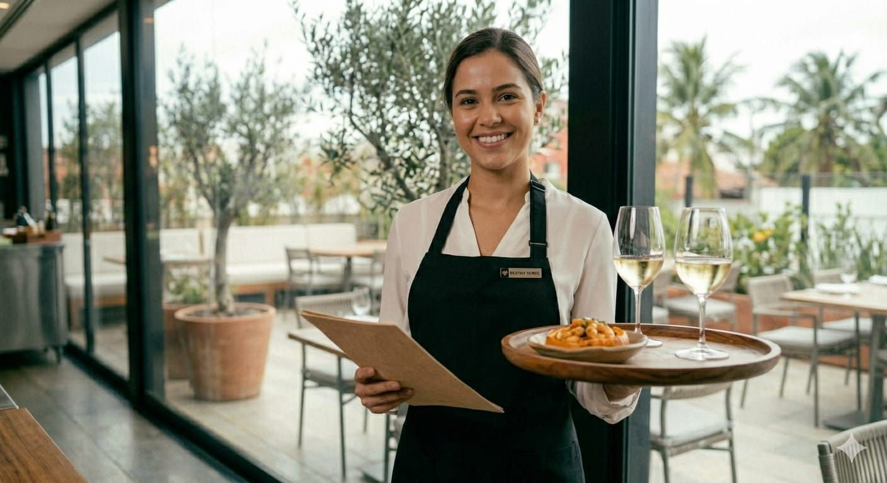

Missão
Proporcionar experiências gastronômicas memoráveis com excelência na culinária italiana, ingredientes frescos e técnicas refinadas. Complementar isso com atendimento acolhedor e experiência digital prática e sofisticada.
Conheça a história do Apollo, referência em gastronomia italiana em Natal!
O Restaurante Apollo nasceu do sonho de Ricardo Silva, um empreendedor apaixonado por gastronomia e experiências memoráveis. Aos 38 anos, após anos vivenciando diferentes culturas culinárias e observando tendências internacionais, Ricardo decidiu trazer para Natal um conceito ainda pouco explorado: a sofisticação da alta gastronomia italiana, com raízes nas regiões da Itália e olhar contemporâneo sobre tradição, técnica e produto.
Fundado há cinco anos, o Apollo surgiu com a proposta de ser mais do que um restaurante — um destino. Inspirado na elegância e no simbolismo do nome "Apollo", que remete à perfeição, à arte e à harmonia, Ricardo idealizou um espaço onde cada detalhe fosse cuidadosamente pensado: da arquitetura minimalista à apresentação impecável dos pratos.
Desde o início, o restaurante se destacou pelo compromisso com ingredientes frescos, técnicas refinadas e uma equipe altamente qualificada. A cozinha, liderada por profissionais experientes, combina tradição italiana e criatividade, criando pratos que equilibram sabor, estética e identidade. Massas frescas e molhos de longa cocção, antipasti, risotos e dolci clássicos tornaram-se marcas registradas da casa.

Hoje, consolidado no mercado local, o Apollo vive um novo momento: expansão e modernização. Sem abrir mão da sua essência, o restaurante busca integrar ainda mais tecnologia e inovação à experiência gastronômica, reforçando seu posicionamento como referência em alta gastronomia italiana na cidade.
Mais do que servir refeições, o Apollo cria memórias — seja em um jantar romântico, uma celebração especial ou um encontro de negócios. Cada visita é pensada para ser única, elegante e inesquecível.

Proporcionar experiências gastronômicas memoráveis com excelência na culinária italiana, ingredientes frescos e técnicas refinadas. Complementar isso com atendimento acolhedor e experiência digital prática e sofisticada.
Ser reconhecido como o principal destino de gastronomia italiana em Natal, destacando-se pela inovação, qualidade excepcional e pela criação de momentos memoráveis para cada cliente.
Excelência na culinária italiana, no atendimento e no ambiente, com paixão por cozinhar e servir bem. Transparência na origem dos ingredientes, no trabalho da equipe e nas histórias por trás de cada prato, com respeito à temporada e à tradição italiana.
Conheça os profissionais mais talentosos da casa!

Chef Executivo
Com formação em culinária mediterrânea na Europa.

Sous-chef
Especialista em frutos do mar.

Chef de Partie (Massas)
Apaixonado pela gastronomia italiana.

Chef de Partie (Sobremesas)
Formada em confeitaria fina.

Garçom Sommelier
Orienta os clientes na escolha de vinhos que elevam a experiência gastronômica.

Garçonete
Reconhecida pelo atendimento acolhedor e atencioso.
Sequência à mesa com cortes nobres, massas frescas e clássicos da cozinha italiana servidos no ritmo ideal, para saborear cada passagem com o mesmo cuidado de um jantar em família na Itália.
Clássicos e criações autorais da tradição italiana à escolha do cliente, com ingredientes selecionados e técnicas precisas. Cada pedido reflete o padrão premium da casa, do antipasto ao dolce.
Espaços e menus italianos sob medida para celebrações, jantares corporativos e encontros especiais. Equipe dedicada e atendimento personalizado do aperitivo ao brinde final.
Carta com destaque para vinhos italianos — do Veneto à Toscana — complementada por rótulos selecionados de outras origens. Sugestões de harmonização para massas, carnes e peixes da nossa cozinha.